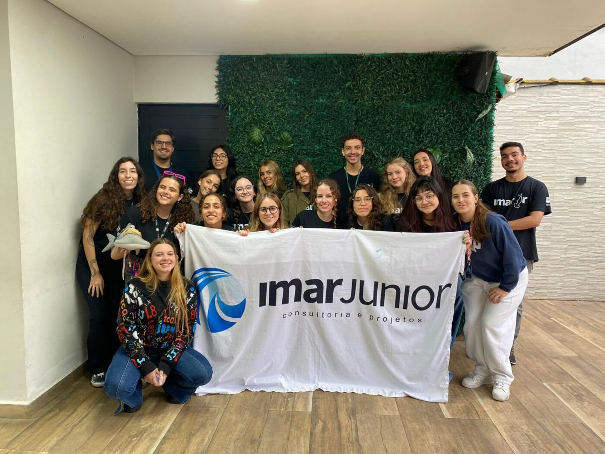
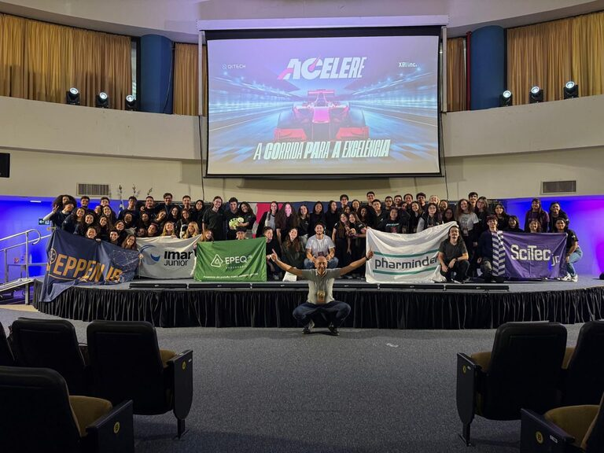
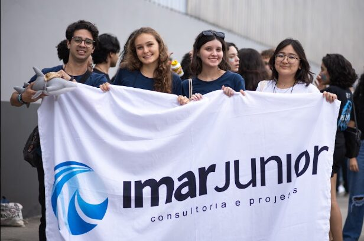

Criar hoje as soluções sustentáveis e profissionais que vão mover o futuro do mercado, formando pessoas comprometidas com o desenvolvimento da sociedade e do meio ambiente.
// empresa júnior · consultoria e projetos
Soluções sustentáveis com a profundidade do oceano.
Somos a IMar Júnior, a Empresa Júnior do Instituto do Mar da Unifesp. Ajudamos empresas, escolas, organizações e eventos a adotar práticas sustentáveis, com ciência de verdade e preço de Empresa Júnior.
quem somos
−200 mEstudantes do mar,
trabalhando em terra firme.
Fundada em 2015, a IMar Júnior é uma Empresa Júnior comprometida com soluções capazes de gerar impacto na sociedade e no meio ambiente. Somos vinculados ao Instituto do Mar da Universidade Federal de São Paulo (Unifesp), no campus Baixada Santista.
Nosso propósito: fomentar a interdisciplinaridade, formar e capacitar jovens empreendedores, estimular a inovação e promover a sustentabilidade por meio dos nossos projetos.
- BICTCiência e Tecnologia do Mar
- ENG·AMBEngenharia Ambiental
- ENG·PETEngenharia de Petróleo
- OCEANOOceanografia

Ser referência na formação de líderes capacitados e na excelência em soluções sustentáveis, consolidando a IMar Jr. como referência em sustentabilidade no litoral paulista.
- Transparência
- Resiliência
- Ética
- Protagonismo
- Inconformismo
- União
- Proatividade
0ano de fundação
0anos de atuação
0cursos do Instituto do Mar
0frentes de serviço
0ODS da Agenda 2030
nossos serviços
−1.000 mSoluções ambientais para o seu empreendimento ou evento.
Empresas, escolas, organizações e eventos: ajudamos cada um a adotar práticas sustentáveis e contribuir para um futuro mais verde.
Empresas · Eventos
Consultoria ESG
Diagnóstico completo para empresas e eventos, analisando processos e desenvolvendo estratégias alinhadas aos pilares Ambiental, Social e de Governança (ESG).
como trabalhamos
−1.800 mPor que contratar uma Empresa Júnior?
Contratar uma EJ é apoiar o Movimento Empresa Júnior, que forma universitários capazes, líderes e comprometidos com o meio através da educação empreendedora.
- + Qualidade
- Projetos desenvolvidos por quem estuda o tema a fundo, com a base científica do Instituto do Mar.
- − Custo
- Preço abaixo do mercado, sem abrir mão de rigor técnico.
- ∞ Impacto
- Cada projeto forma novos profissionais e gera valor para a Baixada Santista.
- 01
Reunião inicial
Entendemos o seu negócio, seus desafios e seus objetivos.
- 02
Diagnóstico
Levantamento técnico dos processos, resíduos e pontos de impacto.
- 03
Proposta sob medida
Escopo, prazo e investimento pensados para a sua realidade.
- 04
Execução e entrega
Implementação acompanhada, relatório final e orientação contínua.
compromissos globais
−3.000 mAlinhados à Agenda 2030 da ONU.
Cada projeto é desenvolvido com foco na geração de impacto ambiental positivo e na promoção do desenvolvimento sustentável, por meio de consultorias em gestão de resíduos, educação ambiental, sustentabilidade e conservação dos ecossistemas marinhos.
Educação de qualidade
Palestras, aulas e dinâmicas de educação ambiental para escolas e empresas.
Cidades e comunidades sustentáveis
Gestão de resíduos e projetos com comunidades do litoral paulista.
Ação contra a mudança global do clima
Estratégias ESG que reduzem impactos e emissões das operações.
Vida na água
Conservação dos ecossistemas marinhos: o que nos trouxe até aqui.
2030
Década da Ciência Oceânica
Em sintonia com a Década das Nações Unidas da Ciência Oceânica para o Desenvolvimento Sustentável (UNESCO / COI).

// registro de campo
Ilha Diana, Santos.
Em parceria com a IO Jr. e o IPT, a IMar Júnior desenvolveu um projeto para reduzir a vulnerabilidade socioambiental e melhorar as condições ambientais da comunidade da Ilha Diana, formada por pescadores artesanais.
É esse tipo de impacto que nos move: ciência aplicada, perto da comunidade e do mar.
// processo seletivo
É aluno do Instituto do Mar?
BICT Mar, Engenharia Ambiental, Engenharia de Petróleo ou Oceanografia: vem viver o Movimento Empresa Júnior com a gente. Acompanhe nosso Instagram para saber quando abre o próximo processo seletivo.
Seguir @imarjr
contato
−4.800 mTransforme desafios em oportunidades.
Conte o que você precisa e agende uma reunião. Será um prazer entender suas necessidades e construir soluções sustentáveis para o seu negócio.
- E-MAILcontato@imarjunior.com.br
- WHATSAPP(11) 94829-4434
- INSTAGRAM@imarjr
- LINKEDINIMar Júnior